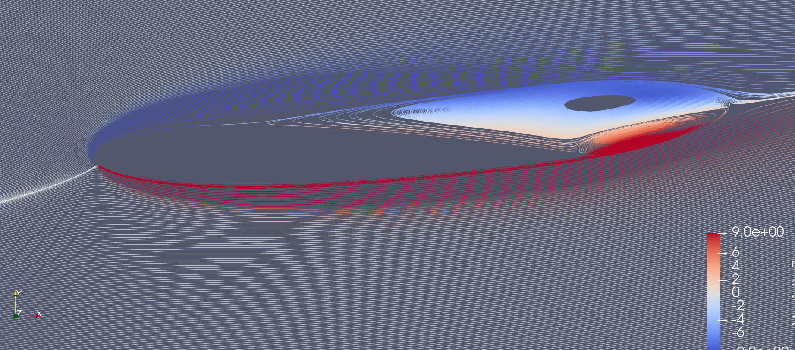
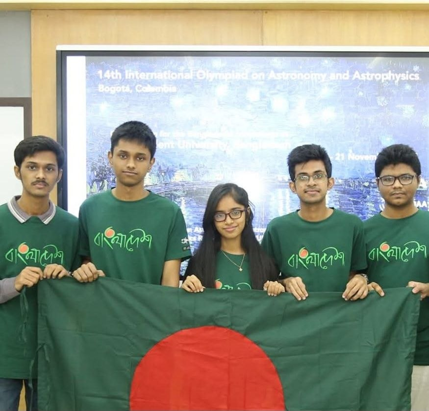
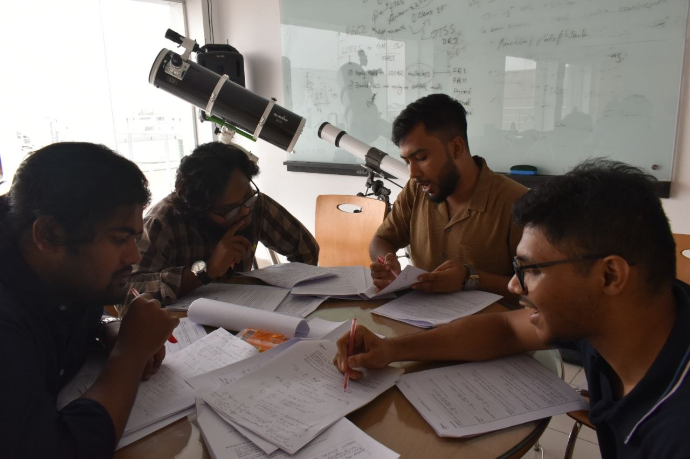

I am interested in finding patterns in complex fluid flows: identifying the
dominant physics so that it can be controlled. I look at flows through the
framework of dynamical systems, in terms of attractors, bifurcations and
stability. To extract those patterns and build control strategies from them, I
use modern machine learning tools. Most of my time right now goes into
designing and running the CFD experiments that generate the data these methods
need.
Research
I work on unsteady flows at low Reynolds number,
approaching them as dynamical systems and using CFD experiments I design and
run myself as the data source. The two threads below are connected: the second
grew directly out of a computational bottleneck in the first.

Laminar separation bubbles forming near the TE. Simulation:OpenFOAM, Visualization: Paraview.
Modeling and Control of Flows Over Rapidly Maneuvering Airfoils
2025 – present
Undergraduate thesis · Supervisor: Dr. Mohammad Ali, Department of Mechanical Engineering, BUET
I am developing reduced-order models of the aerodynamic forces on an
airfoil under active actuation, taking leading-edge blowing as the control
input. The training data comes from controlled OpenFOAM experiments run on my
own machine. The Reynolds number is kept low deliberately for two reasons. First, it keeps the
simulations fully resolved without any turbulence modeling, so the data
reflects the governing equations rather than a closure assumption; and the second follows from the first
and the fact that my PC cannot do turbulent DNS.
Attracting structures computed by advecting particles backward in time. 5 time units, 51 snapshots, each snapshot integrated 102,000 particles for 1.1 time units.
Statistical Modeling of Lagrangian Coherent Structures
2026 – present
Independent, arising from the thesis work
Computing Lagrangian Coherent Structures is expensive. An ensemble of
particles has to be integrated through time, with Jacobians and their singular
values evaluated at every step, and most of those trajectories turn out to
carry no information about where the attracting sets are. I am investigating
whether the first few integration steps are enough to predict where those sets
will form, so that dense sampling can be concentrated there instead of spread
uniformly.
Two public repositories related to my current thesis work.
The first one is a collection of OpenFOAM case files building towards jet actuation
experiments on unsteady flow over airfoils. The second repository is a post-processing
library that grew out of the rough code snippets I wrote for getting CFD data into suitable formats
(e.g. NetCDF or hdf5),cropping, interpolation of data over cartesian grid and loading snapshots.
The OpenFOAM cases behind the thesis experiments. Each
one is self-contained, documents the modeling assumptions it rests on, and
ships the geometry and meshing scripts needed to reproduce it.
A Python library for post-processing OpenFOAM output:
loading snapshots, interpolating onto Cartesian grids, cropping, and
Lagrangian analysis including trajectory integration. It started as tooling
I needed for the coherent-structure work and became general enough to keep
separate.
Teaching and Outreach
Bangladesh Olympiad on Astronomy and Astrophysics
2021 – present
Academic Member; Academic Coordinator since 2026
I came into the Bangladesh Olympiad on Astronomy
and Astrophysics as a participant, and represented Bangladesh at the IOAA in
2021, held remotely that year, where I received an Honorable Mention. I have
stayed with the program since: setting problems for the regional and national
rounds and for the team selection tests, and running training sessions for the
national team. As Academic Coordinator I decide what gets taught and organize
the national camp.


Left: IOAA 2021. Right: checking scripts with the academic team, 2026.
Earlier Work
My initial interest in control and dynamical systems came from a third
year undergraduate project on electromechanical system design. The setup
involved coordinating a drone with an ensemble of small ground robots,
though how far the control could be pushed was limited by sensor accuracy,
GPS in particular. I and my project mates published it at ICME 2025,
hosted at BUET.